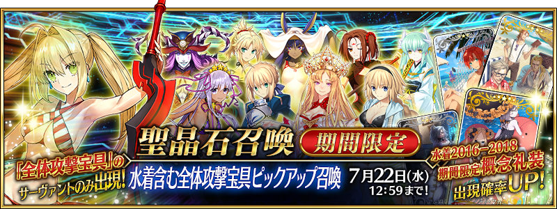
◆「含泳裝全體攻擊寶具Pick Up召喚」期間◆
期間:2020年7月8日(三) 17:00～7月22日(三) 11:59
配合「狩獵關卡 第8彈」的舉辦，舉辦會抽出「持有可對敵全體攻擊寶具的從者」的期間限定「含泳裝全體攻擊寶具Pick Up召喚」！
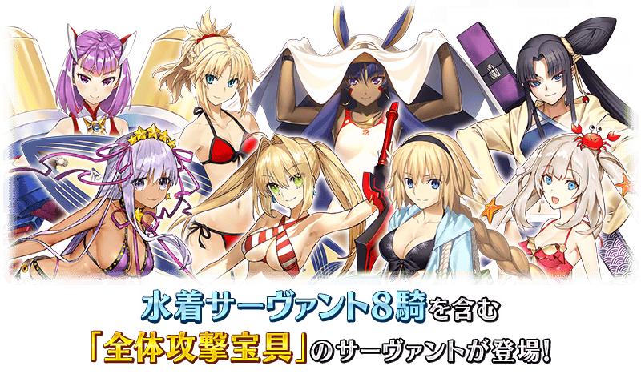
自2016年～2018年舉辦的夏天期間限定活動，下述的期間限定從者再登場！ ・★5(SSR)貞德(Archer) ・★5(SSR)尼祿・克勞狄烏斯(Caster) ・★5(SSR)BB ・★4(SR)海倫娜・布拉瓦茨基(Archer) ・★4(SR)莫德雷德(Rider) ・★4(SR)瑪莉・安東尼(Caster) ・★4(SR)牛若丸(Assassin) ・★4(SR)尼托克里絲(Assassin) 本召喚的從者只會抽出包含上述8位的下表58位！
並且，自2016年～2018年舉辦的夏天期間限定活動，下述的概念禮裝以Pick Up再登場！ ・★5(SSR)パイレーツ・パーティー！ ・★5(SSR)ナイツ・オブ・マリーンズ ・★5(SSR)サマー・リトル ・★5(SSR)真夏のひと時 ・★5(SSR)エメラルド・フロート ・★5(SSR)ヒーロー・オン・ザ・ビーチ ・★4(SR)トワイライト・メモリー ・★4(SR)ミートウォーズ ・★4(SR)ホワイト・クルージング ・★4(SR)キング・ジョーカー・ジャック ・★4(SR)疾風怒濤 ・★4(SR)サンセット・ジャム ・★3(R)シャイニー・ゴッデス ・★3(R)虚影の塵風かき氷 ・★3(R)シュガー・バケーション ・★3(R)カルデア・ビーチバレー ・★3(R)オールナイト・フィーバー ・★3(R)ライティング・ハイ
Pick Up期間中，Pick Up對象概念禮裝的出現機率提升！
詳情請在聖晶石召喚畫面左下的召喚詳細確認。
11次召喚中確定1張★4(SR)以上和確定1位★3(R)以上的從者！ ※確定★4(SR)以上包含從者和概念禮裝。
◆「含泳裝全體攻擊寶具Pick Up召喚」中會被抽出的從者◆
| 職階 | 從者名 | 職階 | 從者名 |
|---|---|---|---|
| Saber | ★5 阿提拉 | Caster | ★5 安娜塔西亞 |
| ★5 阿爾托莉亞・潘德拉剛 | ★5 雪赫拉莎德 (不夜城的Caster) | ||
| ★5 莫德雷德 | ★5 尼祿・克勞狄烏斯 | ||
| ★4 齊格飛 | ★4 海倫娜・布拉瓦茨基 | ||
| ★4 鈴鹿御前 | ★4 吉爾伽美什 | ||
| ★4 拉克什米・芭伊 | ★4 童謠 | ||
| ★3 弗格斯・馬克・羅伊 | ★4 尼托克里絲 | ||
| Archer | ★5 阿周那 | ★4 瑪莉・安東尼 | |
| ★5 貞德 | ★3 阿維斯布隆 | ||
| ★5 拿破崙 | ★3 馮・霍恩海姆・帕拉塞爾斯 | ||
| ★4 阿塔蘭塔 | ★3 傑羅尼莫 | ||
| ★4 Emiya | ★3 查爾斯・巴貝奇 | ||
| ★4 海倫娜・布拉瓦茨基 | ★3 梅菲斯托費勒斯 | ||
| ★3 子吉爾 | Assassin | ★4 牛若丸 | |
| ★3 俵藤太 | ★4 尼托克里絲 | ||
| Lancer | ★5 迦爾納 | ★3 風魔小太郎 | |
| ★5 布拉達曼特 | Berserker | ★5 項羽 | |
| ★4 伊莉莎白・巴托里 | ★4 玉藻貓 | ||
| ★4 哪吒 | ★4 弗蘭肯斯坦 | ||
| ★4 帕爾瓦蒂 | ★4 蘭斯洛特 | ||
| ★4 芬恩・麥克庫爾 | ★3 清姬 | ||
| ★4 瓦爾基里 | ★3 大流士三世 | ||
| ★3 赫克特 | MoonCancer | ★5 吉娜可＝加里吉利 (偉大石像神) | |
| ★3 羅慕路斯 | ★5 BB | ||
| Rider | ★5 阿基里斯 | ||
| ★5 歐羅巴 | |||
| ★5 奧德修斯 | |||
| ★5 弗朗西斯・德雷克 | |||
| ★4 阿斯托爾福 | |||
| ★4 瑪莉・安東尼 | |||
| ★4 瑪爾大 | |||
| ★4 莫德雷德 | |||
| ★3 亞歷山大 | |||
| ★3 美杜莎 |
◆有關從者的注意◆
※期間限定從者只限下述8位是抽出對象。請注意下述8位以外的期間限定從者，就算是持有可對敵全體攻擊的寶具也不會被抽出。
・★5(SSR)貞德(Archer)
・★5(SSR)尼祿・克勞狄烏斯(Caster)
・★5(SSR)BB
・★4(SR)海倫娜・布拉瓦茨基(Archer)
・★4(SR)莫德雷德(Rider)
・★4(SR)瑪莉・安東尼(Caster)
・★4(SR)牛若丸(Assassin)
・★4(SR)尼托克里絲(Assassin)
※由於從者不會個別Pick Up，出現機率在各稀有度是均為一致。
※請注意透過章節進行所追加的從者是被抽出對象外。
※下述的從者在舉辦期間結束後，不會追加到故事召喚。
・★5(SSR)貞德(Archer)
・★5(SSR)尼祿・克勞狄烏斯(Caster)
・★5(SSR)BB
・★4(SR)海倫娜・布拉瓦茨基(Archer)
・★4(SR)莫德雷德(Rider)
・★4(SR)瑪莉・安東尼(Caster)
・★4(SR)牛若丸(Assassin)
・★4(SR)尼托克里絲(Assassin)
※「★5(SSR)吉娜可＝加里吉利(偉大石像神)」為「★5(SSR)偉大石像神」靈基再臨到第2階段的話名稱會變成「★5(SSR)吉娜可＝加里吉利」。
※關於隱藏真名尚未判明的從者，透過主線關卡的進行會讓從者及一部份寶具的名稱變化。
◆有關從者真名的注意◆
在2018年12月31日(二) 23:00以後新配信的主線故事及期間限定活動、一部份關卡、宣傳活動及召喚中，會顯示隱藏真名的對象從者真名。
※2018年12月31日(一) 22:59前已經配信的主線故事、復刻活動、一部份關卡中不在此限。
◆有關概念禮裝的注意◆
※請注意做為抽出對象的期間限定概念禮裝只限下述，其他的期間限定概念禮裝是被抽出對象外。
・★5(SSR)パイレーツ・パーティー！
・★5(SSR)ナイツ・オブ・マリーンズ
・★5(SSR)サマー・リトル
・★5(SSR)真夏のひと時
・★5(SSR)エメラルド・フロート
・★5(SSR)ヒーロー・オン・ザ・ビーチ
・★4(SR)トワイライト・メモリー
・★4(SR)ミートウォーズ
・★4(SR)ホワイト・クルージング
・★4(SR)キング・ジョーカー・ジャック
・★4(SR)疾風怒濤
・★4(SR)サンセット・ジャム
・★3(R)シャイニー・ゴッデス
・★3(R)虚影の塵風かき氷
・★3(R)シュガー・バケーション
・★3(R)カルデア・ビーチバレー
・★3(R)オールナイト・フィーバー
・★3(R)ライティング・ハイ
※下述的概念禮裝，就算Pick Up期間中能靠友情點數召喚獲得。
・★3(R)シャイニー・ゴッデス
・★3(R)虚影の塵風かき氷
・★3(R)シュガー・バケーション
・★3(R)カルデア・ビーチバレー
・★3(R)オールナイト・フィーバー
・★3(R)ライティング・ハイ
※請注意在自動變還設定登錄★3(R)概念禮裝的情況，下述的概念禮裝會是自動變還的對象。
・★3(R)シャイニー・ゴッデス
・★3(R)虚影の塵風かき氷
・★3(R)シュガー・バケーション
・★3(R)カルデア・ビーチバレー
・★3(R)オールナイト・フィーバー
・★3(R)ライティング・ハイ

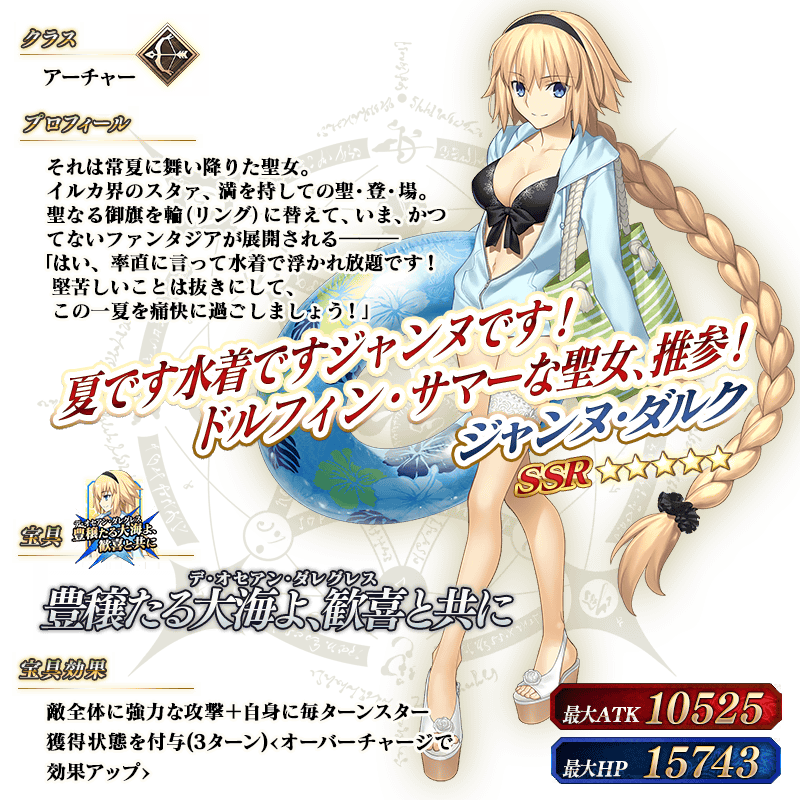
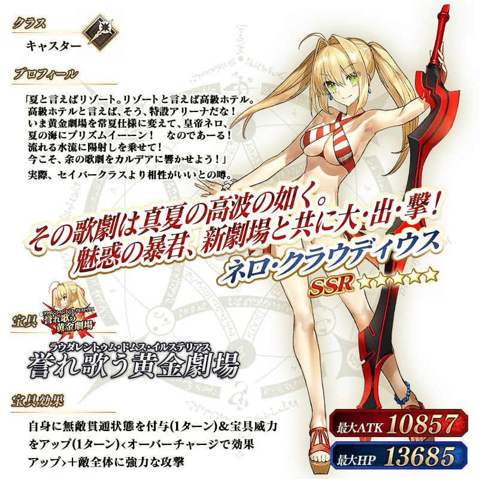
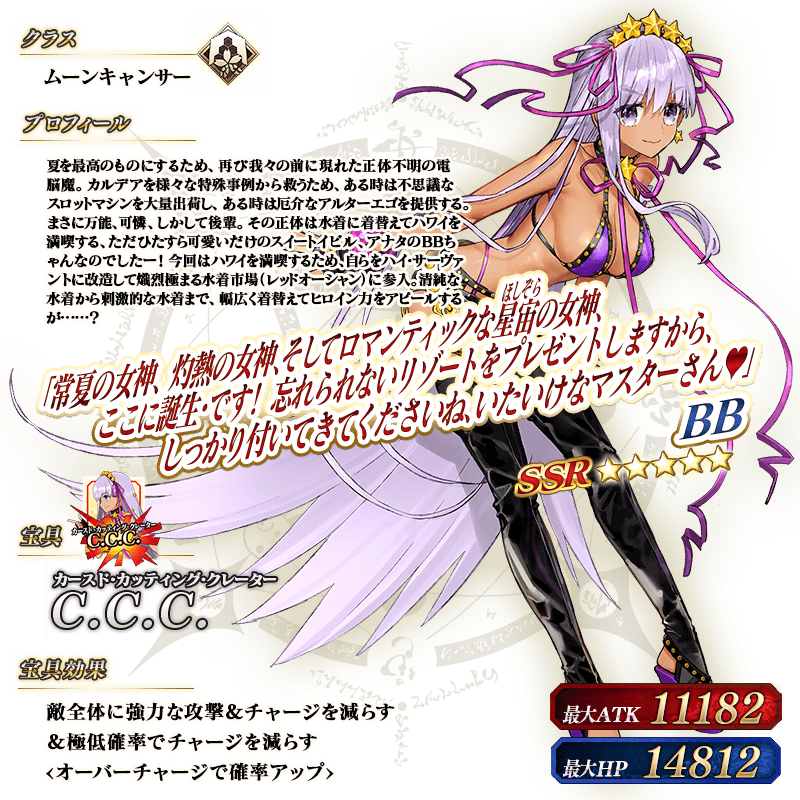 ※上述「★5(SSR)BB」的立繪為靈基再臨第2階段。
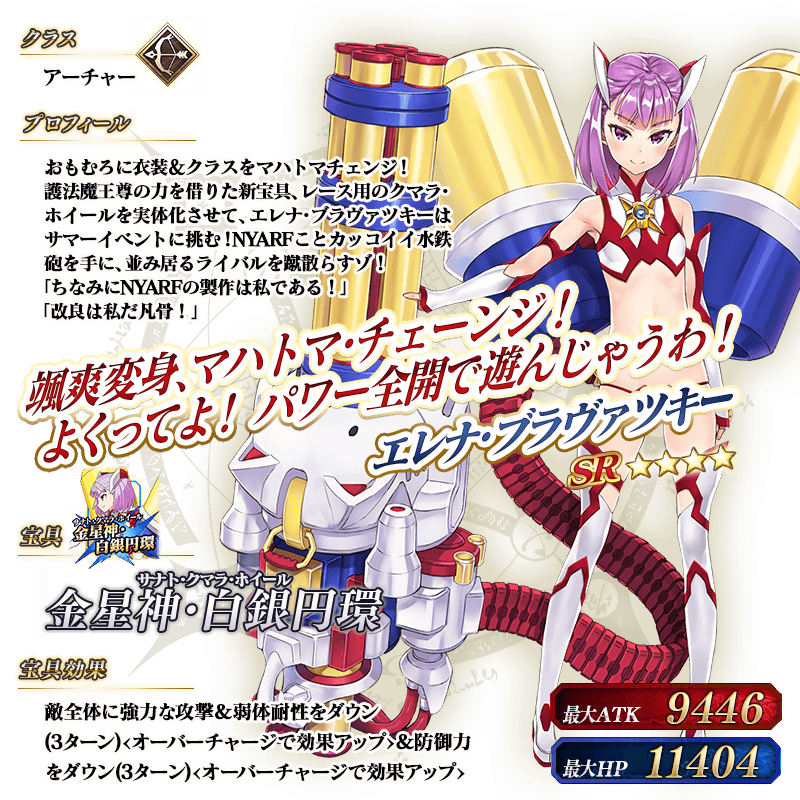 ※上述「★4(SR)海倫娜・布拉瓦茨基(Archer)」的立繪為靈基再臨第2階段。

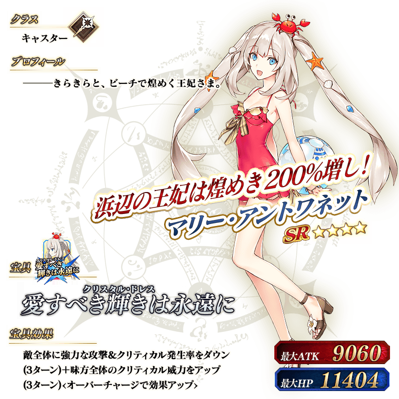
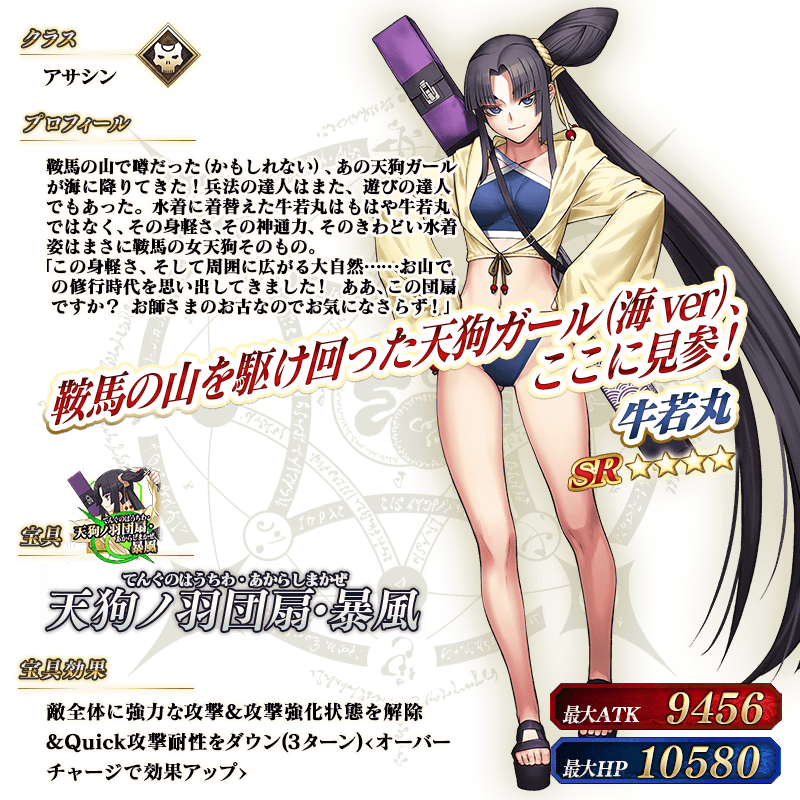
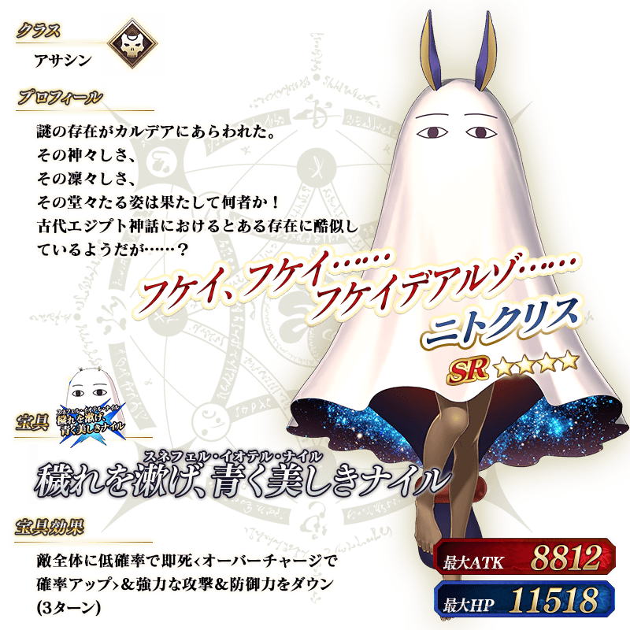

|
★★★★★SSR |

|
★★★★★SSR |

|
★★★★★SSR |

|
★★★★★SSR |

|
★★★★★SSR |

|
★★★★★SSR |

|
★★★★SR |

|
★★★★SR |
| 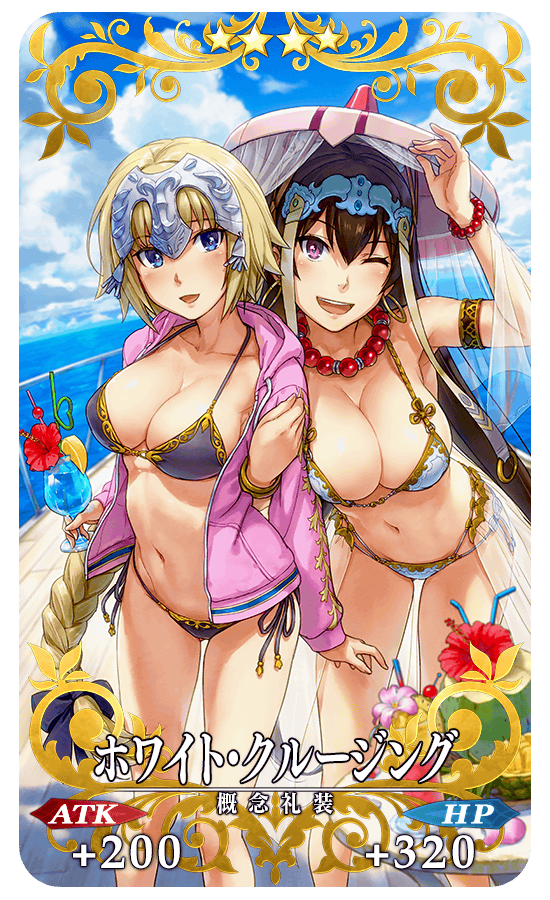 |
★★★★SR |

|
★★★★SR |

|
★★★★SR |

|
★★★★SR ※7月8日(三) 19:00修正 |

|
★★★R |

|
★★★R |

|
★★★R |

|
★★★R |

|
★★★R |

|
★★★R |
介紹在本召喚會被抽出的8位期間限定從者寶具演出！
在「Fate/Grand Order」官方網站內的公告中，以影片公開寶具演出，敬請確認。
【★5(SSR)貞德(Archer)】
【★5(SSR)尼祿・克勞狄烏斯(Caster)】
【★5(SSR)BB】
【★4(SR)海倫娜・布拉瓦茨基(Archer)】
【★4(SR)莫德雷德(Rider)】
【★4(SR)瑪莉・安東尼(Caster)】
【★4(SR)牛若丸(Assassin)】
【★4(SR)尼托克里絲(Assassin)】
其他還有，「狩獵關卡 第8彈」同時舉辦！
關於詳情，請自下述橫幅確認。
■「狩獵關卡 第8彈」詳細情報 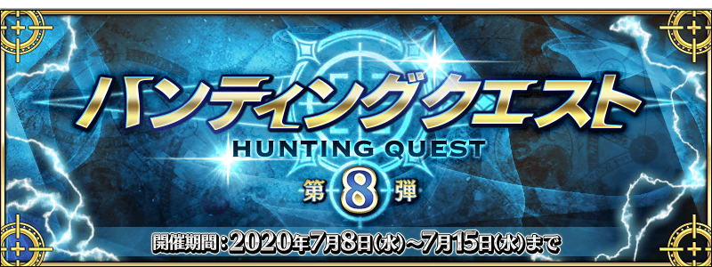